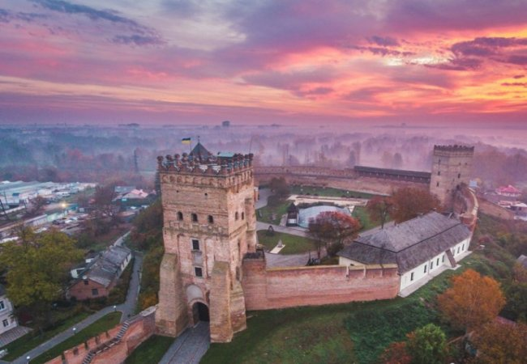
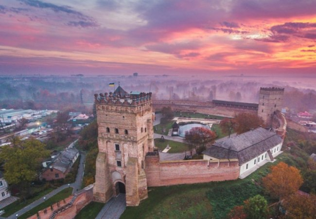

Луцьк
За даними офіційного сайту Луцьк (станом на 1 січня 2023 року), чисельність населення міста становить 215 986 осіб. Якщо враховувати всю міську територіальну громаду (МТГ), то чисельність — 243 482 осіб.
За даними офіційного сайту Луцьк (станом на 1 січня 2023 року), чисельність населення міста становить 215 986 осіб. Якщо враховувати всю міську територіальну громаду (МТГ), то чисельність — 243 482 осіб.
